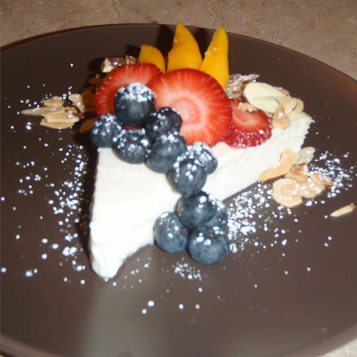

Anu's Bhapa Doi Cheesecake

A wonderful cheesecake style light dessert.
Ingredients
- 1 (32 ounce) container whole-milk yogurt
- 1 (14 ounce) can condensed milk
- 2 tablespoons almonds
Steps To Make
- Line a large strainer with a large coffee filter, or several layers of cheesecloth. Pour the yogurt
into the lined strainer, and set it over a bowl. Cover and refrigerate until the yogurt has reached
the consistency of soft cream cheese, about 8 hours.
- Preheat an oven to 350 degrees F (175 degrees C). Grease an 8-inch pie tin.
- Discard the liquid that has drained from the yogurt. Place the yogurt into the bowl, and whisk in
the condensed milk. Pour into the prepared pan.
- Bake in the preheated oven until the mixture is firm and the top is lightly browned, about 30
minutes. Remove from the oven, and sprinkle almonds over top. Cool to room temperature before
slicing into wedges and serving.